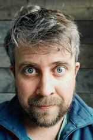
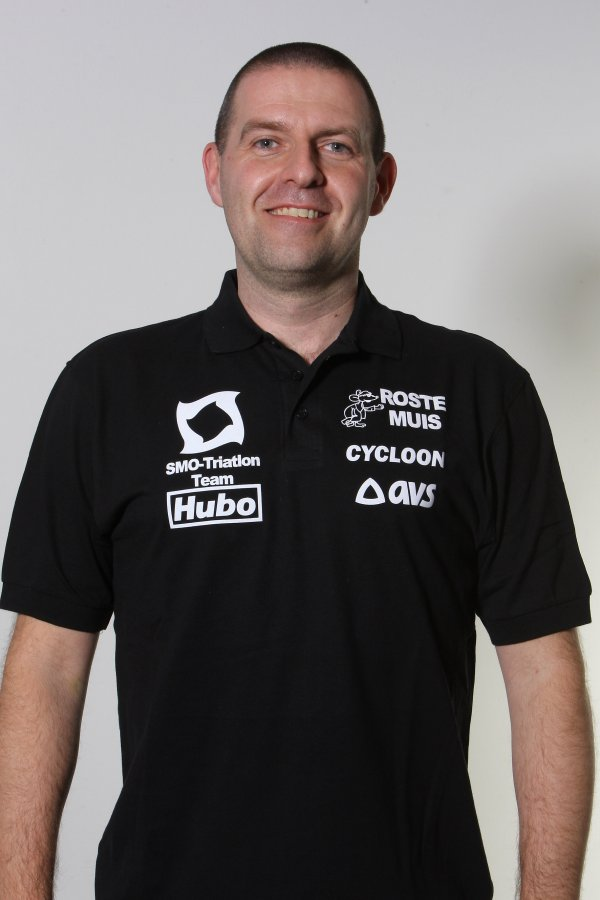
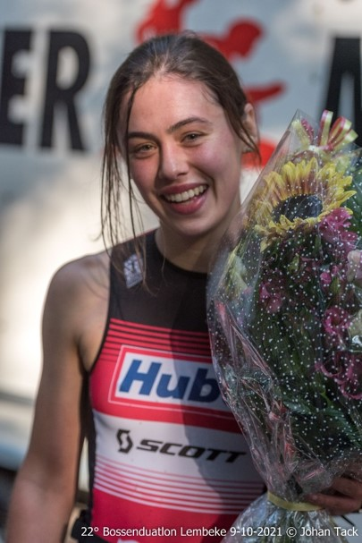
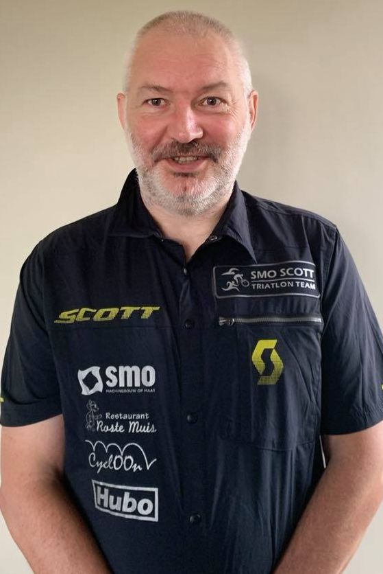
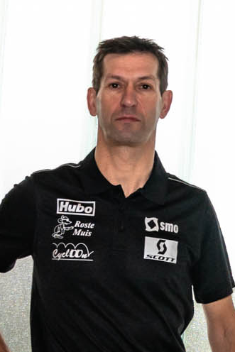
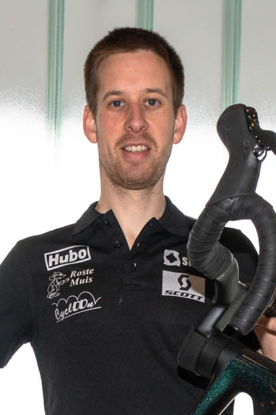
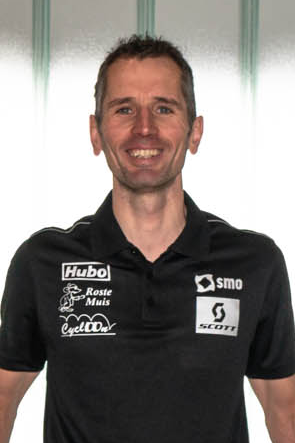
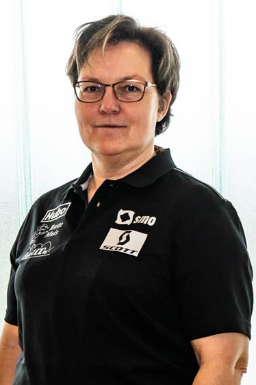

Bestuur
← Artikels · Fotogalerijen

ICTad hoc (events, communicatie, ...)
- Vzw boekhouding
Jeugdwerking
Voorzitter
Teamkapiteitn T3 – 2de divisie
- Website beheer- Ledenbeheer volwassenen- Evenementen en activiteiten - Algemene info - Versturen nieuwsbrieven
Contact: info@smo-triatlonteam.be
Taken: - Sportief verantwoordelijke - Coördinator trainingen en Wedstrijden - Atletenvertegenwoordiger - Opmaken jaarplanning - Organisatie groepstrainingen in overleg met trainers - Aanmaken nieuwsbrieven
Kledijverantwoordelijke